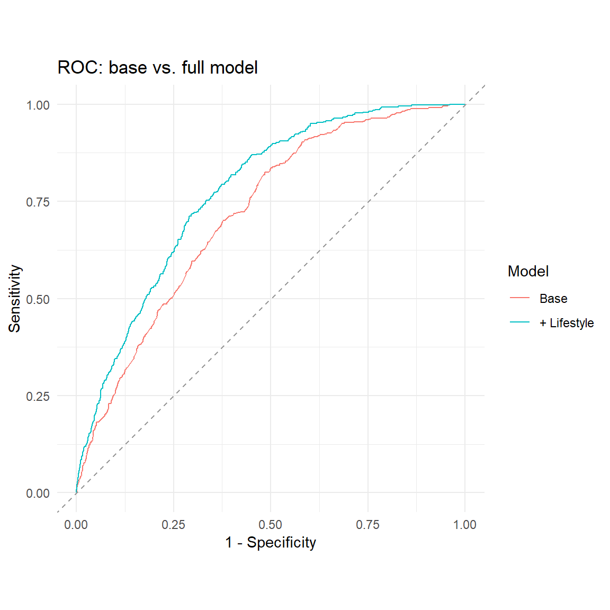

The requirements describe a generic workflow for relating modifiable lifestyle factors to a binary clinical outcome. This dataset contains no Alzheimer variable; its outcome is diabetes (NHANES DIQ010), so diabetes is used as the binary target and the Alzheimer wording is treated as a methodological template.
The data were cleaned with per-variable missing-code handling (see docs/01_data_quality_issue.md); the earlier blanket rule had deleted valid values such as ages 7/9/77 and sleep durations of 7 h / 9 h.
We proceed from simple to complex: (1) univariate screening (Chi²/t-tests), (2) multiple logistic regression with odds ratios, (3) hierarchical regression to quantify the added value of lifestyle over non-modifiable factors, and (4) model performance via ROC/AUC and a confusion matrix.
alcohol_week and the lab values (LDL/HDL/triglycerides) are screened univariately but kept out of the core model: alcohol is ~50% missing (non-drinkers skip the item, so complete-case use would bias the sample) and labs are ~60% missing.
Interpretation. OR > 1 = risk factor, OR < 1 = protective, OR = 1 = no effect. Each estimate is adjusted for all other variables in the model (control for confounders), e.g. the BMI effect is the change in the odds of diabetes per 1-unit BMI increase, holding age, sex, ethnicity and the other lifestyle factors constant.
6 4. Hierarchical (block-wise) regression
How much does lifestyle add beyond non-modifiable factors?
A significant LRT and a higher pseudo-R² / lower AIC indicate that lifestyle factors provide additional explanatory value over age, sex and ethnicity alone.
dt <-roc.test(roc1, roc2, method ="delong")cat(sprintf("DeLong test (base vs full): Z = %.2f, p = %.3g\n", dt$statistic, dt$p.value))
DeLong test (base vs full): Z = -6.77, p = 1.25e-11
Code
ggroc(list(`Base`= roc1, `+ Lifestyle`= roc2), legacy.axes =TRUE) +geom_abline(slope =1, intercept =0, linetype ="dashed", colour ="grey60") +labs(title ="ROC: base vs. full model", x ="1 - Specificity",y ="Sensitivity", colour ="Model") +coord_equal() +theme_minimal()

8 6. Confusion matrix
A confusion matrix depends on the chosen probability cut-off. With ~12% prevalence the default 0.5 threshold classifies almost everyone as “No” (high specificity, very low sensitivity). We therefore report it alongside the Youden-optimal threshold (the point on the ROC curve maximising sensitivity + specificity − 1), which reflects the clinically relevant trade-off.
Headline. In these adults, diabetes is overwhelmingly an age- and adiposity-driven condition, and modifiable lifestyle factors add a real but modest layer of predictive value on top of the non-modifiable factors (age, sex, ethnicity). All estimates are associations, not causation (cross-sectional, unweighted, complete-case).
What predicts diabetes.
Univariate (Sec. 2): the diabetic group is markedly older (63.5 vs 50.0 y), heavier (BMI 33.0 vs 29.0) and far more often hypertensive (72% vs 30%). Counter-intuitively, sugar and calorie intake are lower in diabetics — almost certainly reverse causation (diet change after diagnosis), a classic cross-sectional artifact. Sleep and alcohol show no univariate difference.
Adjusted (Sec. 3): the independent risk factors are age (OR 1.05/yr ≈ +63%/decade), male sex (1.61), BMI (1.08/unit) and current smoking (1.69). Sleep and moderate activity lose significance once age and BMI are controlled.
Does lifestyle add value? (Sec. 4) Yes, significantly: pseudo-R² rises 0.090 → 0.144, LRT χ² = 147.9 (p ≈ 2×10⁻²⁹), AIC falls 2515 → 2380. Lifestyle contributes genuine extra explanatory value (Δpseudo-R² ≈ 0.054) — but the non-modifiable block still carries most of the signal.
Model performance (Sec. 5–6). Discrimination improves from AUC 0.719 to 0.774 (DeLong p ≈ 1.3×10⁻¹¹) — useful for risk-stratification, not definitive diagnosis. The confusion matrix shows why threshold choice matters under ~12% prevalence: at 0.5 the model reaches 88% accuracy but only 5% sensitivity (useless as a screen — accuracy is misleading under class imbalance), whereas the Youden-optimal threshold (0.132) balances sensitivity and specificity at ~71% each.
Bottom line. Age, BMI, male sex and current smoking are the independent risk factors; hypertension co-occurs strongly but is a comorbidity, not a clean lifestyle cause. Modifiable lifestyle factors significantly but modestly improve prediction beyond age/sex/ethnicity — affirming the project’s central question.
Caveats: complete-case analysis (no imputation); NHANES survey weights are not applied (associations, not national-prevalence estimates); the “protective” sugar/calorie effects are likely reverse causation; alcohol_week and lab values were excluded from the core model due to high, partly structural missingness. See docs/03_interpretation.md for the full discussion.